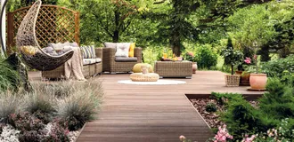
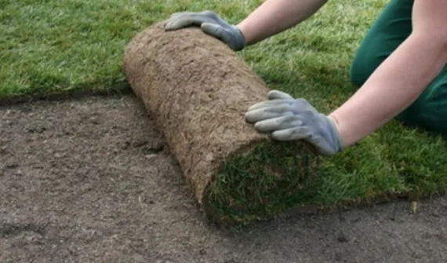
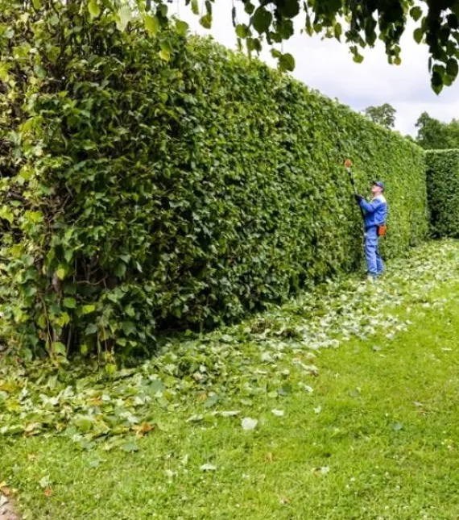

- Accueil
- Zones d’intervention
- Saint-André-lez-Lille
Créativité paysagiste à Saint-André-lez-Lille, 59350 avec le Ch’ti Élagueur
Élagueur à Saint-André-lez-Lille · 59350
Imaginez un atelier où les éléments naturels deviennent des pinceaux et la terre, une toile infinie. Chez le Ch’ti Élagueur à Saint-André-lez-Lille, 59350, nous sommes les artistes de cette scène, orchestrant un ballet verdoyant dans lequel chaque feuille, chaque pousse est une note qui compose une symphonie visuelle. Notre expertise dépasse le simple aménagement paysager : nous sommes des créateurs d’ambiances, des magiciens qui transforment des espaces ordinaires en jardins extraordinaires. La taille de haie n’est pas simplement une coupe, mais une série de gestes artistiques minutieux, chaque branche soigneusement ajustée pour trouver sa place parfaite dans ce tableau naturel. L’entretien du jardin n’est pas qu’une routine, mais une célébration quotidienne de la nature, où chaque plante est soignée avec amour pour qu’elle prospère et embellisse davantage cet écrin végétal. Chez le Ch’ti Élagueur, nous ne sculptons pas seulement des haies, nous sculptons des émotions. Chaque coupe est une expression artistique, une symphonie de verdure qui façonne un jardin où la beauté, la forme et la fonction ne font qu’un.
Notre savoir-faire
Devis paysagiste gratuit et détaillé du Ch’ti Élagueur
Le Ch’ti Élagueur à Saint-André-lez-Lille, 59350, vous invite à plonger dans l’univers des possibles, où chaque jardin devient une saga à écrire ensemble. Nos devis ne sont pas de simples documents, ce sont des invitations à imaginer, à rêver d’un espace extérieur personnalisé. Chaque estimation gratuite est le début d’une conversation où nous écoutons vos souhaits, vos idées, pour les traduire en un plan concret. Notre équipe de passionnés, d’artistes du paysage, déploie son savoir-faire pour créer des jardins uniques, des espaces extérieurs qui racontent votre histoire, reflètent votre personnalité. Chaque détail, du choix des plantes à l’aménagement des chemins, est minutieusement pensé pour créer un paysage à nul autre pareil. Laissez-nous être votre partenaire dans la réalisation de votre vision, nous sommes là pour transformer vos rêves en réalité verdoyante.
La maîtrise du Ch’ti Élagueur
Imaginez un monde où chaque branche est une œuvre en devenir, chaque arbre une sculpture naturelle. Chez le Ch’ti Élagueur à Saint-André-lez-Lille, 59350, notre équipe d’élagueurs est bien plus que des experts en coupe d’arbres. Nous sommes des artistes de la verdure, des sculpteurs qui, avec habileté et précision, taillent chaque arbre pour révéler sa beauté intrinsèque. Chaque coupe est un geste réfléchi, une symphonie de formes et de lignes dans laquelle l’harmonie et la vitalité de l’arbre sont préservées. Notre passion pour la préservation de la santé des arbres se manifeste à travers chaque action, chaque élagage étant réalisé avec un souci minutieux pour maintenir l’intégrité structurelle et esthétique de l’arbre. Chaque intervention est une danse délicate avec la nature, une fusion entre compétence technique et respect de la croissance naturelle. Pour nous, tailler un arbre est bien plus qu’une tâche, c’est un hommage à la splendeur de la nature, une forme d’art où l’élégance de l’arbre se dévoile sous nos mains expertes.

Élagueur à Saint-André-lez-Lille
Dans l’univers féérique des jardins, le Ch’ti Élagueur à Saint-André-lez-Lille, 59350, est le conteur qui transforme chaque espace extérieur en une histoire captivante. Notre métier ne se limite pas à manipuler des outils, mais à créer des tableaux vivants où chaque plante, chaque aménagement est une note dans une mélodie verdoyante. Chaque coin de votre jardin devient une scène où notre équipe d’artisans paysagistes s’attelle à métamorphoser l’ordinaire en extraordinaire. Nous sommes des architectes de l’émotion, des alchimistes qui marient la terre et les végétaux pour façonner des jardins qui éveillent les sens. Chaque intervention, que ce soit pour tailler une haie ou entretenir un massif, est exécutée avec une précision artistique, une passion palpable pour créer un jardin où la poésie se mêle à la nature.





Élagueur à Saint-André-lez-Lille
Artisanat paysagiste enchanté à Saint-André-lez-Lille
Imaginez un jardin où chaque haie est une sculpture vivante, chaque coupe est un geste qui façonne un paysage éblouissant. Le Ch’ti Élagueur à Saint-André-lez-Lille, 59350, est bien plus qu’un simple paysagiste : nous sommes des visionnaires qui transforment les haies en éléments clés de votre paysage. Chaque taille est une opportunité de créer des formes et des structures uniques, où la symétrie et l’harmonie se fondent pour encadrer votre espace extérieur avec élégance. Chaque coupe est exécutée avec une minutie artistique pour créer des haies qui ajoutent une esthétique remarquable à votre jardin, tout en favorisant leur croissance saine pour une verdure éclatante tout au long de l’année.
Demander mon devis gratuitVotre projet
Haies sculptées par un élagueur visionnaire
Au cœur de chaque jardin, il y a une histoire à raconter, une ode à la nature que le Ch’ti Élagueur à Saint-André-lez-Lille, 59350, s’efforce de célébrer. Chaque coin de verdure est bien plus qu’une simple parcelle de terre ; c’est un écosystème à part entière, un théâtre où chaque plante, chaque arbre, chaque élément interagit dans une danse de croissance et de vie. Notre équipe de jardiniers passionnés est là pour entretenir cette symphonie naturelle, chaque action étant méticuleusement planifiée pour cultiver un environnement où la biodiversité prospère. Chaque intervention, du simple désherbage à la plantation d’espèces indigènes, est un pas vers la création d’un jardin en parfaite symbiose avec la nature, un refuge où les écosystèmes prospèrent dans une harmonie parfaite.

Nos services à Saint-André-lez-Lille
Huit savoir-faire pour votre jardin
Élagage, haies, pelouse, dessouchage, abattage et entretien : le Ch’ti Élagueur intervient à Saint-André-lez-Lille (59350).
 01
01Élagage
Des arbres sains, sûrs et élégants.
 02
02Dessouchage arbre et haie
Souches et racines retirées, terrain dégagé.
 03
03Taille de haie
Des haies nettes, denses et bien dessinées.

04Création de pelouse
Un gazon dense, de la préparation du sol à la pose.
 05
05Abattage arbres et haies
Abattage d’arbres et de haies, travail soigné.
 06
06Jardinier
Entretien de jardin, de la tonte à la plantation.
 07
07Élagueur
Élagage de tout type d’arbre.

08Taille de haie et arbres fruitiers
Des coupes pensées pour la floraison et la récolte.
Zones d’intervention
Nous intervenons aussi près de chez vous
Depuis Lambersart, le Ch’ti Élagueur se déplace à Saint-André-lez-Lille et dans toutes les communes voisines.
Lambersart (59130) · métropole lilloise